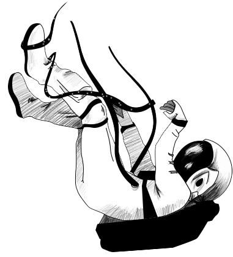

404
You are lost this page
You've reached the edge of the universe. The page you've requested can't be found. Don't worry, you can return to the previous page.

You are lost this page
You've reached the edge of the universe. The page you've requested can't be found. Don't worry, you can return to the previous page.